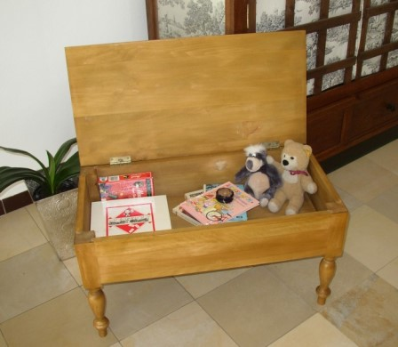

Weihnachten
2006:
Wenn Sie möchten, daß sich Ihre Kleinen oder Ihre Enkel ein
Leben lang an dieses Fest erinnern, dann verschenken Sie doch einfach
einen Footstool. Diese komfortablen Hocker avancieren in jedem Haus ganz
schnell zum Lieblingsmöbel aller Kinder.
Die traumhaft-hübschen, phantasievollen Stoffe - als Bezug oder Husse- erfüllen viele Weihnachtswünsche.
Jeder Footstool
ist mit kompromissloser Qualität ausgestattet.
Seine Haltbarkeit erfreut von Kindheit bis ins hohe Alter.

Weitere
Infos unter:
Menue-Rubrik "Kamin" (siehe oben)